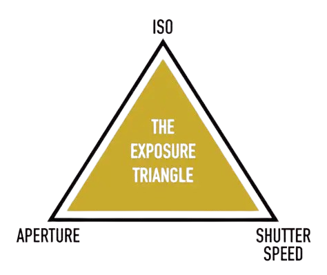
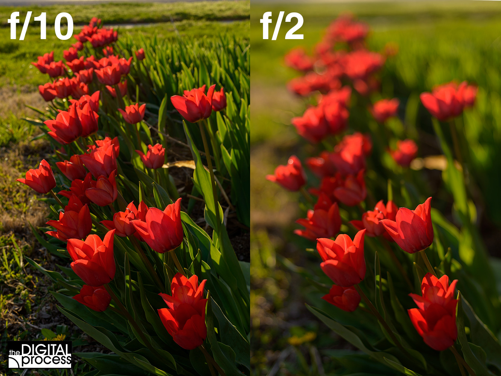
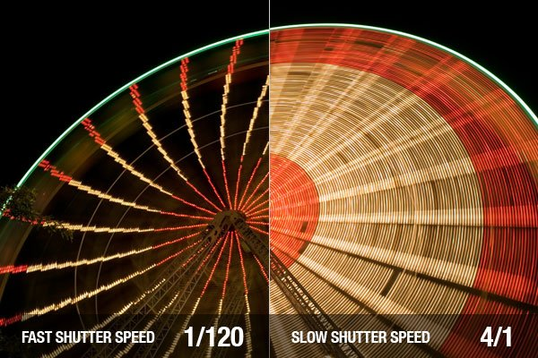
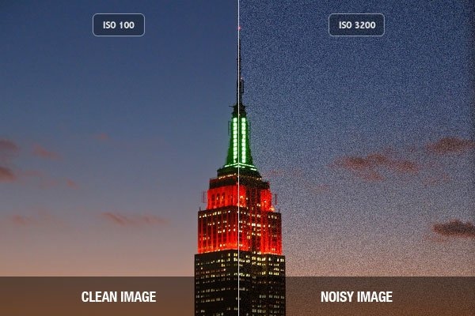
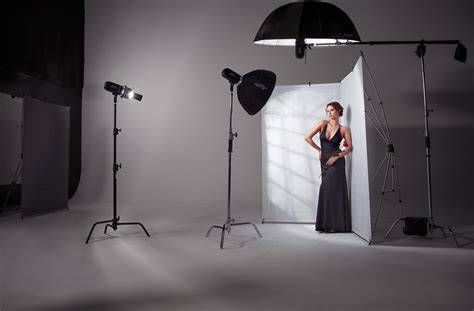

LEARN / HOW TO USE
LEARN TO SEE.
THEN LEARN TO SHOOT.
practical guide to camera settings and photography
CAMERA BASICS
Every great photo starts with three key settings: aperture, shutter speed, and ISO. Together, they control how your image looks.
APERTURE
Control how much light enters the lens and affect depth of field(backgroun blur).
Example: f/1.8 = blurry backgroundf/ 11 = more in focus
SHUTTER SPEED
Control how long the sensor is exposed to light and affect motion blur.
Example: 1/1000s = freeze action1/30s = motion blur
ISO
Controls the camera's sensitivity to light and affect brightness ans noise.
Example: ISO 100 = best qualityISO 3200 = bright,more noise
UNDERSTANDING SETTINGS
Each setting changes your photo in a different way. Learn how to adjust them to get the look you want.
THE EXPOSURE TRIANGLE


Aperture
Changes background blur and depth of field.
Shutter speed
Freezes or blurs motion.
ISO
Makes the image brighter or darker.LEARN COMPOSITION
Good composition helps turn a simple scene into a striking photo. Use these techniques to guide the viewer's eye and create balance.

Grid
Place your subject off-center for a more balanced shot.Framing
Use natural frames to add depth and focus.
Lighting
The direction from which light hits your subject determines shadows, depth, and texture.
Leading lines
Use lines to guide the viewer's eye.